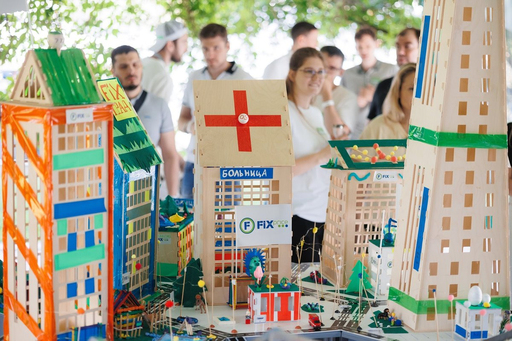
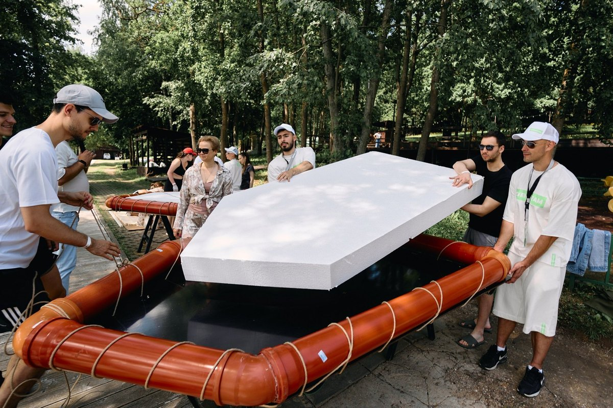
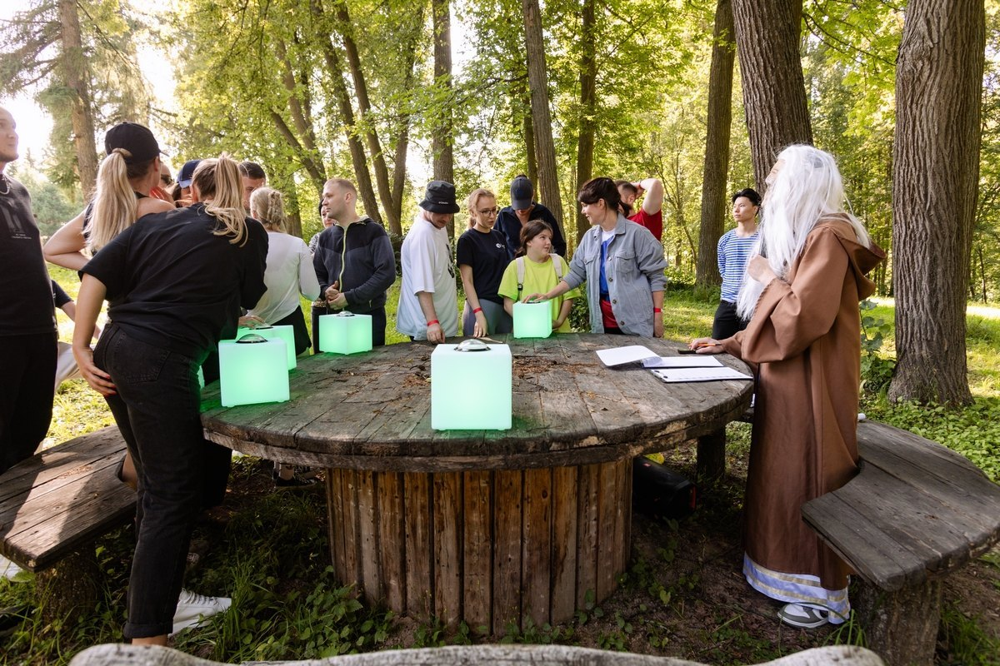
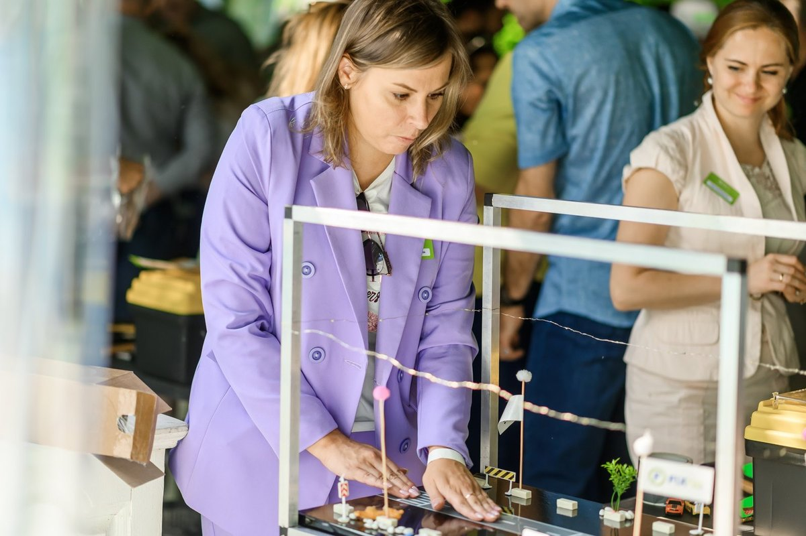

Сколько стоит тимбилдинг на человека и когда его бронировать
Варианты заголовка
Сколько стоит тимбилдинг на человека и когда его бронировать
Тимбилдинг и корпоратив: почему цена участника отличается в 2,4 раза
Бюджет на тимбилдинг: считаем на человека, а не на вечер
Если редакции нужна привязка к региону: «Корпоратив для иркутской компании: сколько стоит участник и когда бронировать».
Подрядчик называет цену всего вечера, а сравнивать нужно цену одного участника. По заявкам 2026 года она отличается в 2,4 раза: от 6 700 ₽ в группе до 100 человек до 2 800 ₽ в группе больше 500. Ниже цифры и шпаргалка, как заказать тимбилдинг или корпоратив и не переплатить.
Я Мария Варламова, руковожу ивент-агентством «Каталист». С 2010 года мы провели больше 5 000 проектов и получили 16 наград ивент-индустрии, в том числе BEMA. Агентство работает из Москвы и возит программы в регионы: например, в Томске команды на нашем выездном тимбилдинге строили город из картона.
Цифры ниже взяты из 367 заявок компаний на события для групп от 50 человек с 1 января по 19 ноября 2026 года. Это данные одного агентства: они показывают структуру спроса, а не объём рынка.

«Мегаполис»: команды строят районы одного города
Сколько стоит тимбилдинг на человека
Типичная заявка 2026 года: 120 человек и 650 000 ₽, то есть 5 000 ₽ на участника. Но средняя цифра скрывает главное. Медианный бюджет на человека зависит от размера группы:
50-100 человек: 6 700 ₽;
101-200 человек: 4 600 ₽;
201-500 человек: 3 900 ₽;
больше 500 человек: 2 800 ₽ (заявок в этой группе 12, оценка приблизительная).
Причина простая. Сцена, звук, ведущий и реквизит стоят почти одинаково на 100 и на 300 человек. На большой группе эти расходы делятся на большее число людей.
Так выглядит большая группа в деле. Для «ВкусВилл» мы провели «Мегаполис»: 130 сотрудников из разных отделов разделились на команды, каждая построила свой район, и за 3 часа команды соединили районы в город из 16 районов.
Для компании из Иркутска отсюда два вывода. Первый: если у вас несколько офисов или подразделений, один общий ивент обойдётся дешевле на человека, чем несколько отдельных. Второй: если подрядчик едет из другого города, дорога и проживание его команды остаются постоянными расходами. Они не зависят от числа гостей, поэтому на группе в 60 человек заметны сильнее, чем на группе в 300. Просите вынести логистику в смете отдельной строкой и сравнивайте предложения по цене участника для вашей группы, а не по общей сумме.

Гонки на плотах: команды строят плот и проходят дистанцию
Когда бронировать тимбилдинг
Между заявкой и событием в 2026 году в среднем проходило 7,8 недели. Каждая пятая компания, 20%, приходила меньше чем за четыре недели.
Срок зависит от месяца события:
май: заявка за 3,6 недели, и 56% заявок пришли позже чем за четыре недели до даты;
июль: за 7,1 недели, 19% поздних заявок;
сентябрь: за 11,8 недели, 6% поздних заявок;
ноябрь: за 4,2 недели, 39% поздних заявок.
Новогодние заявки этого сезона пришли в среднем за 7,6 недели до праздника, в основном в октябре.
Поздняя заявка не означает, что ивента не будет. Она означает, что площадку, дату и ведущего придётся выбирать из оставшихся. Если планируете летний выезд на природу, отсчитайте от даты восемь недель назад: к этому дню площадка уже должна быть выбрана.

Командный квест на природе
Что происходит с рынком тимбилдинга и корпоративов
По Google Trends, с января по октябрь 2026 года запрос «корпоратив» искали на 3,5% чаще, чем годом раньше, а «тимбилдинг» на 2,5% чаще. С 20 сентября по 8 ноября интерес к этим запросам оказался ниже прошлогоднего на 15,5% и 16,3%.
По исследованию ВНИЦ R&C и MICE Excellence (июль 2026 года), доля корпоративных мероприятий, которые проходят в Москве, выросла с 33% до 45%.
Компании не отказываются от событий, но собирают группы крупнее и считают цену на человека. В наших заявках 65% приходится на группы от 100 человек.
Ещё одна деталь. Программу с нейросетями продаёт каждое четвёртое агентство из первой двадцатки поиска по запросу «тимбилдинг москва», а в заявках её упоминают около 2% компаний. Если подрядчик предлагает такой формат как обязательный тренд, спросите, какую задачу команды он решит.
Когда тимбилдинг не поможет
Если люди уходят из-за зарплаты, перегрузки или конфликта с руководителем, ивент проблему не решит. Сначала устраните причину, потом собирайте команду. И не ставьте командный день на выходные без согласия сотрудников: событие в личное время многие воспримут как обязанность.
Шпаргалка
1. Сформулируйте задачу одной фразой: что должно измениться в команде после события.
2. Посчитайте участников и найдите ориентир цены на человека для своей группы.
3. Сравнивайте предложения по цене участника, логистику подрядчика смотрите отдельной строкой.
4. Подавайте заявку за восемь недель до даты, на осень раньше.
5. Новогодний корпоратив обсуждайте с подрядчиком в октябре.

«Мегаполис»: участники собирают макеты зданий
Мария Варламова, генеральный директор ивент-агентства «Каталист».
Агентство проводит тимбилдинги и корпоративы с 2010 года, провело больше 5 000 проектов и получило 16 наград.
Письмо редактору
Марина, добрый день!
Спасибо за новую ссылку на превью и за приём приглашения в ЭДО.
Мы пересобрали колонку и просим заменить опубликованный текст целиком на новую версию. Цифры те же, из нашего исследования рынка, «больше 5 000 проектов» как согласовали. Что стало иначе: заголовок называет пользу для читателя, абзацы короче, добавили реальный пример и четыре фотографии с проектов агентства.
Заголовок, три варианта на выбор:
1. Сколько стоит тимбилдинг на человека и когда его бронировать
2. Тимбилдинг и корпоратив: почему цена участника отличается в 2,4 раза
3. Бюджет на тимбилдинг: считаем на человека, а не на вечер
Если редакции важна привязка к региону, оставим прежний: «Корпоратив для иркутской компании: сколько стоит участник и когда бронировать».
Фотографии во вложении, четыре горизонтальных кадра 1200 на 800 пикселей. Места в тексте отмечены словом [ФОТО] с номером, номера идут в порядке вложений, подписи указаны.
В тексте три ссылки на catalystrussia.ru: «тимбилдинг», «выездном тимбилдинге» и подпись «Каталист». Просим оставить их открытыми, без nofollow.
Два вопроса:
1. Сколько ссылок и сколько фотографий можно в материале?
2. Успеете ли заменить текст до публикации? Подскажите, когда она запланирована.
Текст колонки:
Подрядчик называет цену всего вечера, а сравнивать нужно цену одного участника. По заявкам 2026 года она отличается в 2,4 раза: от 6 700 ₽ в группе до 100 человек до 2 800 ₽ в группе больше 500. Ниже цифры и шпаргалка, как заказать тимбилдинг [https://catalystrussia.ru/timbilding/] или корпоратив и не переплатить.
Я Мария Варламова, руковожу ивент-агентством «Каталист». С 2010 года мы провели больше 5 000 проектов и получили 16 наград ивент-индустрии, в том числе BEMA. Агентство работает из Москвы и возит программы в регионы: например, в Томске команды на нашем выездном тимбилдинге [https://catalystrussia.ru/programmy/timbilding-na-prirode/] строили город из картона.
Цифры ниже взяты из 367 заявок компаний на события для групп от 50 человек с 1 января по 19 ноября 2026 года. Это данные одного агентства: они показывают структуру спроса, а не объём рынка.
[ФОТО 1: katalist-megapolis-020.jpg, подпись ««Мегаполис»: команды строят районы одного города»]
Сколько стоит тимбилдинг на человека
Типичная заявка 2026 года: 120 человек и 650 000 ₽, то есть 5 000 ₽ на участника. Но средняя цифра скрывает главное. Медианный бюджет на человека зависит от размера группы:
- 50-100 человек: 6 700 ₽;
- 101-200 человек: 4 600 ₽;
- 201-500 человек: 3 900 ₽;
- больше 500 человек: 2 800 ₽ (заявок в этой группе 12, оценка приблизительная).
Причина простая. Сцена, звук, ведущий и реквизит стоят почти одинаково на 100 и на 300 человек. На большой группе эти расходы делятся на большее число людей.
Так выглядит большая группа в деле. Для «ВкусВилл» мы провели «Мегаполис»: 130 сотрудников из разных отделов разделились на команды, каждая построила свой район, и за 3 часа команды соединили районы в город из 16 районов.
Для компании из Иркутска отсюда два вывода. Первый: если у вас несколько офисов или подразделений, один общий ивент обойдётся дешевле на человека, чем несколько отдельных. Второй: если подрядчик едет из другого города, дорога и проживание его команды остаются постоянными расходами. Они не зависят от числа гостей, поэтому на группе в 60 человек заметны сильнее, чем на группе в 300. Просите вынести логистику в смете отдельной строкой и сравнивайте предложения по цене участника для вашей группы, а не по общей сумме.
[ФОТО 2, подпись «Гонки на плотах: команды строят плот и проходят дистанцию»]
Когда бронировать тимбилдинг
Между заявкой и событием в 2026 году в среднем проходило 7,8 недели. Каждая пятая компания, 20%, приходила меньше чем за четыре недели.
Срок зависит от месяца события:
- май: заявка за 3,6 недели, и 56% заявок пришли позже чем за четыре недели до даты;
- июль: за 7,1 недели, 19% поздних заявок;
- сентябрь: за 11,8 недели, 6% поздних заявок;
- ноябрь: за 4,2 недели, 39% поздних заявок.
Новогодние заявки этого сезона пришли в среднем за 7,6 недели до праздника, в основном в октябре.
Поздняя заявка не означает, что ивента не будет. Она означает, что площадку, дату и ведущего придётся выбирать из оставшихся. Если планируете летний выезд на природу, отсчитайте от даты восемь недель назад: к этому дню площадка уже должна быть выбрана.
[ФОТО 3, подпись «Командный квест на природе»]
Что происходит с рынком тимбилдинга и корпоративов
По Google Trends, с января по октябрь 2026 года запрос «корпоратив» искали на 3,5% чаще, чем годом раньше, а «тимбилдинг» на 2,5% чаще. С 20 сентября по 8 ноября интерес к этим запросам оказался ниже прошлогоднего на 15,5% и 16,3%.
По исследованию ВНИЦ R&C и MICE Excellence (июль 2026 года), доля корпоративных мероприятий, которые проходят в Москве, выросла с 33% до 45%.
Компании не отказываются от событий, но собирают группы крупнее и считают цену на человека. В наших заявках 65% приходится на группы от 100 человек.
Ещё одна деталь. Программу с нейросетями продаёт каждое четвёртое агентство из первой двадцатки поиска по запросу «тимбилдинг москва», а в заявках её упоминают около 2% компаний. Если подрядчик предлагает такой формат как обязательный тренд, спросите, какую задачу команды он решит.
Когда тимбилдинг не поможет
Если люди уходят из-за зарплаты, перегрузки или конфликта с руководителем, ивент проблему не решит. Сначала устраните причину, потом собирайте команду. И не ставьте командный день на выходные без согласия сотрудников: событие в личное время многие воспримут как обязанность.
Шпаргалка
1. Сформулируйте задачу одной фразой: что должно измениться в команде после события.
2. Посчитайте участников и найдите ориентир цены на человека для своей группы.
3. Сравнивайте предложения по цене участника, логистику подрядчика смотрите отдельной строкой.
4. Подавайте заявку за восемь недель до даты, на осень раньше.
5. Новогодний корпоратив обсуждайте с подрядчиком в октябре.
[ФОТО 4: katalist-megapolis-015.jpg, подпись ««Мегаполис»: участники собирают макеты зданий»]
Мария Варламова, генеральный директор ивент-агентства «Каталист [https://catalystrussia.ru]».
Агентство проводит тимбилдинги и корпоративы с 2010 года, провело больше 5 000 проектов и получило 16 наград.
Мария, Каталист
+7 991 150-10-01